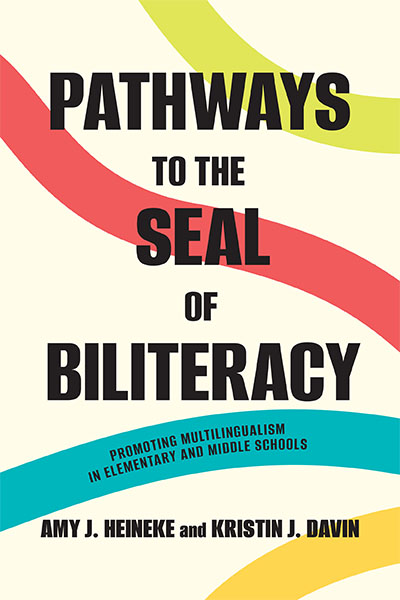

Comprehensive guide for K-8 educators implementing multilingual pathways and biliteracy development.
View DetailsWhere Language, Culture & Technology Meet
Research-driven frameworks for educators navigating multilingual classrooms, diverse cultural knowledge systems, and the emerging role of AI in teaching and learning.
Being literate today means more than reading and writing. It means navigating languages, honoring diverse ways of knowing, and critically engaging with the technologies reshaping education.
Biliteracy policy and implementation, multilingual pathways, and the Seal of Biliteracy across K-20 education.
State resources →Indigenous language revitalization, culturally responsive teacher preparation, and honoring diverse ways of knowing.
Project TORCH →AI literacy for language educators, responsible use of generative AI, and the future of technology in teaching.
ChatGPT research →A library of research-grounded books spanning biliteracy policy, multilingual education, and classroom implementation.

Comprehensive guide for K-8 educators implementing multilingual pathways and biliteracy development.
View DetailsInnovative approaches for colleges and universities to recognize and promote biliteracy achievement.
View DetailsEvidence-based strategies for building multilingual competence and biliteracy across K-12 curricula.
View DetailsIn-depth case studies and policy analysis for implementing Seal of Biliteracy programs nationwide.
View DetailsDr. Kristin J. Davin is a Professor of Foreign Language Education at UNC Charlotte whose research spans multilingual education, Indigenous language revitalization, and the responsible use of AI in teaching. As principal investigator on a $1.5M federal grant partnering with the Eastern Band of Cherokee Indians, her work connects language policy to real communities and classrooms.
A former K-12 Spanish teacher, Dr. Davin served as Co-Editor of Foreign Language Annals (2022–2026) and has received awards including the Stephen A. Freeman Award and the ACTFL Anthony Papalia Award for her contributions to the field.
More About Dr. Davin